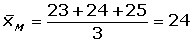
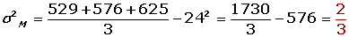
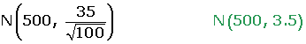
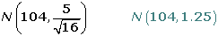
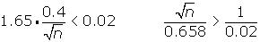
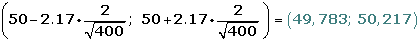
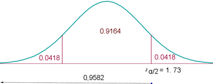
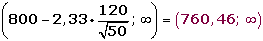
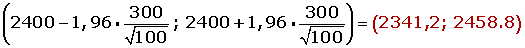
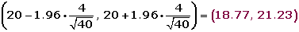

Problemas de inferencia estadística
1En una fábrica que consta de 600 trabajadores queremos tomar una muestra de 20. Sabemos que hay 200 trabajadores en la sección A, 150 en la B, 150 en la C y 100 en la D.
2En cierto barrio se quiere hacer un estudio para conocer mejor el tipo de actividades de ocio que gustan más a sus habitantes. Para ello van a ser encuestados 100 individuos elegidos al azar.
1Explicar qué procedimiento de selección sería más adecuado utilizar: muestreo con o sin reposición. ¿Por qué?
2Como los gustos cambian con la edad y se sabe que en el barrio viven 2.500 niños, 7.000 adultos y 500 ancianos, posteriormente se decide elegir la muestra anterior utilizando un muestreo estratificado. Determinar el tamaño muestral correspondiente a cada estrato.
3En cierta cadena de centros comerciales trabajan 150 personas en el departamento de personal, 450 en el departamento de ventas, 200 en el departamento de contabilidad y 100 en el departamento de atención al cliente. Con objeto de realizar una encuesta laboral, se quiere seleccionar una muestra de 180 trabajadores.
1¿Qué tipo de muestreo deberíamos utilizar para la selección de la muestra si queremos que incluya a trabajadores de los cuatro departamentos mencionados?
2¿Qué número de trabajadores tendríamos que seleccionar en cada departamento atendiendo a un criterio de proporcionalidad?
4Sea la población de elementos: {22,24, 26}.
1Escriba todas las muestras posibles de tamaño dos, escogidas mediante muestreo aleatorio simple.
2Calcule la varianza de la población.
3Calcule la varianza de las medias muestrales.
5Las bolsas de sal envasadas por una máquina tienen μ = 500 g y σ = 35 g. Las bolsas se empaquetaron en cajas de 100 unidades.
1Calcular la probabilidad de que la media de los pesos de las bolsas de un paquete sea menor que 495 g.
2Calcular la probabilidad de que una caja 100 de bolsas pese más de 51 kg.
6El tiempo que tardan las cajeras de un supermercado en cobrar a los clientes sigue una ley normal con media desconocida y desviación típica 0,5 minutos. Para una muestra aleatoria de 25 clientes se obtuvo un tiempo medio de 5,2 minutos.
1Calcula el intervalo de confianza al nivel del 95% para el tiempo medio que se tarda en cobrar a los clientes.
2Indica el tamaño muestral necesario para estimar dicho tiempo medio con un el error de ± 0,5 minutos y un nivel de confianza del 95%.
7En una fábrica de componentes electrónicos, la proporción de componentes finales defectuosos era del 20%. Tras una serie de operaciones e inversiones destinadas a mejorar el rendimiento se analizó una muestra aleatoria de 500 componentes, encontrándose que 90 de ellos eran defectuosos. ¿Qué nivel de confianza debe adoptarse para aceptar que el rendimiento no ha sufrido variaciones?
8La variable altura de las alumnas que estudian en una escuela de idiomas sigue una distribución normal de media 1,62 m y la desviación típica 0,12 m. ¿Cuál es la probabilidad de que la media de una muestra aleatoria de 100 alumnas sea mayor que 1.60 m?
9Se ha tomado una muestra de los precios de un mismo producto alimenticio en 16 comercios, elegidos al azar en un barrio de una ciudad, y se han encontrado los siguientes precios:
95, 108, 97, 112, 99, 106, 105, 100, 99, 98, 104, 110, 107, 111, 103, 110.
Suponiendo que los precios de este producto se distribuyen según una ley normal de varianza 25 y media desconocida:
1¿Cuál es la distribución de la media muestral?
2Determine el intervalo de confianza, al 95%, para la media poblacional.
10La media de las estaturas de una muestra aleatoria de 400 personas de una ciudad es 1,75 m. Se sabe que la estatura de las personas de esa ciudad es una variable aleatoria que sigue una distribución normal con varianza σ2 = 0,16 m2.
1Construye un intervalo, de un 95% de confianza, para la media de las estaturas de la población.
2¿Cuál sería el mínimo tamaño muestral necesario para que pueda decirse que la verdadera media de las estaturas está a menos de 2 cm de la media muestral, con un nivel de confianza del 90%?
11Las ventas mensuales de una tienda de electrodomésticos se distribuyen según una ley normal, con desviación típica 900 €. En un estudio estadístico de las ventas realizadas en los últimos nueve meses, se ha encontrado un intervalo de confianza para la media mensual de las ventas, cuyos extremos son 4 663 € y 5 839 €.
1¿Cuál ha sido la media de las ventas en estos nueve meses?
2¿Cuál es el nivel de confianza para este intervalo?
12Se desea estimar la proporción, p, de individuos daltónicos de una población a través del porcentaje observado en una muestra aleatoria de individuos, de tamaño n.
1Si el porcentaje de individuos daltónicos en la muestra es igual al 30%, calcula el valor de n para que, con un nivel de confianza de 0,95, el error cometido en la estimación sea inferior al 3,1%.
2Si el tamaño de la muestra es de 64 individuos, y el porcentaje de individuos daltónicos en la muestra es del 35%, determina, usando un nivel de significación del 1%, el correspondiente intervalo de confianza para la proporción de daltónicos de la población.
13En una población una variable aleatoria sigue una ley normal de media desconocida y desviación típica 2.
1Observada una muestra de tamaño 400, tomada al azar, se ha obtenido una media muestra al igual a 50. ¿Calcule un intervalo, con el 97 % de confianza, para la media de la población.
2Con el mismo nivel de confianza, ¿qué tamaño mínimo debe tener la muestra para qué la amplitud del intervalo que se obtenga sea, como máximo, 1?
14La cantidad de hemoglobina en sangre del hombre sigue una ley normal con una desviación típica de 2g/dl.
Calcule el nivel de confianza de una muestra de 12 extracciones de sangre que indique que la media poblacional de hemoglobina en sangre está entre 13 y 15 g/dl.
15Se sabe que la desviación típica de las notas de cierto examen de Matemáticas es 2,4. Para una muestra de 36 estudiantes se obtuvo una nota media de 5,6. ¿Sirven estos datos para confirmar la hipótesis de que la nota media del examen fue de 6, con un nivel de confianza del 95%?
16Un sociólogo ha pronosticado, que en una determinada ciudad, el nivel de abstención en las próximas elecciones será del 40% como mínimo. Se elige al azar una muestra aleatoria de 200 individuos, con derecho a voto, 75 de los cuales estarían dispuestos a votar. Determinar con un nivel de significación del 1%, si se puede admitir el pronóstico.
17Un informe indica que el precio medio del billete de avión entre Canarias y Madrid es, como máximo, de 120 € con una desviación típica de 40 €. Se toma una muestra de 100 viajeros y se obtiene que la media de los precios de sus billetes es de 128 €.
¿Se puede aceptar, con un nivel de significación igual a 0,1, la afirmación de partida?
18Una marca de nueces afirma que, como máximo, el 6% de las nueces están vacías. Se eligieron 300 nueces al azar y se detectaron 21 vacías.
1Con un nivel de significación del 1%, ¿se puede aceptar la afirmación de la marca?
2Si se mantiene el porcentaje muestral de nueces que están vacías y 1-α = 0.95, ¿qué tamaño muestral se necesitaría para estimar la proporción de nueces con un error menor del 1% por ciento?
19La duración de la bombillas de 100 W que fabrica una empresa sigue una distribución normal con una desviación típica de 120 horas de duración. Su vida media está garantizada durante un mínimo de 800 horas. Se escoge al azar una muestra de 50 bombillas de un lote y, después de comprobarlas, se obtiene una vida media de 750 horas. Con un nivel de significación de 0,01, ¿habría que rechazar el lote por no cumplir la garantía?
20Un fabricante de lámparas eléctricas está ensayando un nuevo método de producción que se considerará aceptable si las lámparas obtenidas por este método dan lugar a una población normal de duración media 2400 horas, con una desviación típica igual a 300. Se toma una muestra de 100 lámparas producidas por este método y esta muestra tiene una duración media de 2320 horas. ¿Se puede aceptarr la hipótesis de validez del nuevo proceso de fabricación con un riesgo igual o menor al 5%?
21El control de calidad una fábrica de pilas y baterías sospecha que hubo defectos en la producción de un modelo de batería para teléfonos móviles, bajando su tiempo de duración. Hasta ahora el tiempo de duración en conversación seguía una distribución normal con media 300 minutos y desviación típica 30 minutos. Sin embargo, en la inspección del último lote producido, antes de enviarlo al mercado, se obtuvo que de una muestra de 60 baterías el tiempo medio de duración en conversación fue de 290 minutos. Suponiendo que ese tiempo sigue siendo Normal con la misma desviación típica:
¿Se puede concluir que las sospechas del control de calidad son ciertas a un nivel de significación del 2%?
22Se cree que el nivel medio de protombina en una población normal es de 20 mg/100 ml de plasma con una desviación típica de 4 miligramos/100 ml. Para comprobarlo, se toma una muestra de 40 individuos en los que la media es de 18.5 mg/100 ml. ¿Se puede aceptar la hipótesis, con un nivel de significación del 5%?
- 1
- 2
- 3
- 4
- 5
- 6
- 7
- 8
- 9
- 10
- 11
- 12
- 13
- 14
- 15
- 16
- 17
- 18
- 19
- 20
- 21
- 22
Ejercicio 1 resuelto
En una fábrica que consta de 600 trabajadores queremos tomar una muestra de 20. Sabemos que hay 200 trabajadores en la sección A, 150 en la B, 150 en la C y 100 en la D.

Ejercicio 2 resuelto
En cierto barrio se quiere hacer un estudio para conocer mejor el tipo de actividades de ocio que gustan más a sus habitantes. Para ello van a ser encuestados 100 individuos elegidos al azar.
1 Explicar qué procedimiento de selección sería más adecuado utilizar: muestreo con o sin reposición. ¿Por qué?
Todas las fórmulas que hemos estudiado de teoría del muestreo y de inferencia estadística presuponen que las poblaciones son infinitas o que, si no lo son, el muestreo aleatorio se realiza con reposición.
2 Como los gustos cambian con la edad y se sabe que en el barrio viven 2.500 niños, 7.000 adultos y 500 ancianos, posteriormente se decide elegir la muestra anterior utilizando un muestreo estratificado. Determinar el tamaño muestral correspondiente a cada estrato.
Para efectuar un muestreo aleatorio estratificado, será necesario que la muestra refleje fielmente los estratos existentes en la población; deben considerarse los estratos formados por: niños, adultos y ancianos.
El tamaño muestral de cada estrato deberá ser proporcional a la presencia del mismo en la población original:
Población total: 2500 + 7000 + 500 = 10 000.


Ejercicio 3 resuelto
En cierta cadena de centros comerciales trabajan 150 personas en el departamento de personal, 450 en el departamento de ventas, 200 en el departamento de contabilidad y 100 departamento de atención al cliente. Con objeto de realizar una encuesta laboral, se quiere seleccionar una muestra de 180 trabajadores.
1 ¿Qué tipo de muestreo deberíamos utilizar para la selección de la muestra si queremos que incluya a trabajadores de los cuatro departamentos mencionados?
Utilizaremos un muestreo aleatorio estratificado, ya que queremos que haya representantes de cada uno de los departamentos.
2 ¿Qué número de trabajadores tendríamos que seleccionar en cada departamento atendiendo a un criterio de proporcionalidad?

Ejercicio 4 resuelto
Sea la población de elementos: {22,24, 26}.
1Escriba todas las muestras posibles de tamaño dos, escogidas mediante muestreo aleatorio simple.
M1 = {22, 24}, M1 = {22, 26}, M1 = {24, 26}
2Calcule la varianza de la población.


3Calcule la varianza de las medias muestrales.



Ejercicio 5 resuelto
Las bolsas de sal envasadas por una máquina tienen μ = 500 g y σ = 35 g. Las bolsas se empaquetaron en cajas de 100 unidades.
1 Calcular la probabilidad de que la media de los pesos de las bolsas de un paquete sea menor que 495 g.


2Calcular la probabilidad de que una caja 100 de bolsas pese más de 51 kg.
Ejercicio 6 resuelto
El tiempo que tardan las cajeras de un supermercado en cobrar a los clientes sigue una ley normal con media desconocida y desviación típica 0,5 minutos. Para una muestra aleatoria de 25 clientes se obtuvo un tiempo medio de 5,2 minutos.
1 Calcula el intervalo de confianza al nivel del 95% para el tiempo medio que se tarda en cobrar a los clientes.
2Indica el tamaño muestral necesario para estimar dicho tiempo medio con un el error de ± 0,5 minutos y un nivel de confianza del 95%.

n ≥ 4
Ejercicio 7 resuelto
En una fábrica de componentes electrónicos, la proporción de componentes finales defectuosos era del 20%. Tras una serie de operaciones e inversiones destinadas a mejorar el rendimiento se analizó una muestra aleatoria de 500 componentes, encontrándose que 90 de ellos eran defectuosos. ¿Qué nivel de confianza debe adoptarse para aceptar que el rendimiento no ha sufrido variaciones?
p = 0.2 q = 1 - p =0.8 p'= 90/ 500 = 0.18
E = 0.2 - 0.18 = 0.02


P (1 - zα/2 <1.12) = 0.86861 - 0.8686 = 0.1314
0.8686 - 0.1314 = 0.737
Nivel de confianza: 73.72%
Ejercicio 8 resuelto
La variable altura de las alumnas que estudian en una escuela de idiomas sigue una distribución normal de media 1,62 m y la desviación típica 0,12 m. ¿Cuál es la probabilidad de que la media de una muestra aleatoria de 100 alumnas sea mayor que 1.60 m?


Ejercicio 9 resuelto
Se ha tomado una muestra de los precios de un mismo producto alimenticio en 16 comercios, elegidos al azar en un barrio de una ciudad, y se han encontrado los siguientes precios:
95, 108, 97, 112, 99, 106, 105, 100, 99, 98, 104, 110, 107, 111, 103, 110.
Suponiendo que los precios de este producto se distribuyen según una ley normal de varianza 25 y media desconocida:
1 ¿Cuál es la distribución de la media muestral?


2Determine el intervalo de confianza, al 95%, para la media poblacional.

95% → zα/2 =1.96
(104 - 1.96 · 1. 25, 104 + 1.9 · 1.25) = (101.55; 106.45)
Ejercicio 10 resuelto
La media de las estaturas de una muestra aleatoria de 400 personas de una ciudad es 1,75 m. Se sabe que la estatura de las personas de esa ciudad es una variable aleatoria que sigue una distribución normal con varianza σ2 = 0,16 m2.
1 Construye un intervalo, de un 95% de confianza, para la media de las estaturas de la población.
n=400 x =1.75 σ=0.4
1- α=0.95 z α/2=1.96
(1.75 ± 1.96 · 0.4/20 ) → (1.7108,1.7892)
2¿Cuál sería el mínimo tamaño muestral necesario para que pueda decirse que la verdadera media de las estaturas está a menos de 2 cm de la media muestral, con un nivel de confianza del 90%?


La muestra debe tener al menos 1083 personas.
Ejercicio 11 resuelto
Las ventas mensuales de una tienda de electrodomésticos se distribuyen según una ley normal, con desviación típica 900 €. En un estudio estadístico de las ventas realizadas en los últimos nueve meses, se ha encontrado un intervalo de confianza para la media mensual de las ventas, cuyos extremos son 4 663 € y 5 839 €.
1 ¿Cuál ha sido la media de las ventas en estos nueve meses?
n = 9 x = (4663 + 5839) / 2; x =5251
2¿Cuál es el nivel de confianza para este intervalo?
E= ( 5839 - 4663) / 2 = 588
588 = z α/2 · 900 / 3 z α/2 = 1.96
1-α = 0.95 → 95%
Ejercicio 12 resuelto
Se desea estimar la proporción, p, de individuos daltónicos de una población a través del porcentaje observado en una muestra aleatoria de individuos, de tamaño n.
1 Si el porcentaje de individuos daltónicos en la muestra es igual al 30%, calcula el valor de n para que, con un nivel de confianza de 0,95, el error cometido en la estimación sea inferior al 3,1%
1- α=0.95 z α/2=1.96

Al menos 840 individuos.
2Si el tamaño de la muestra es de 64 individuos, y el porcentaje de individuos daltónicos en la muestra es del 35%, determina, usando un nivel de significación del 1%, el correspondiente intervalo de confianza para la proporción de daltónicos de la población.
α=0.01 1- α=0.99 z α/2=2.575

Ejercicio 13 resuelto
En una población una variable aleatoria sigue una ley normal de media desconocida y desviación típica 2.
1 Observada una muestra de tamaño 400, tomada al azar, se ha obtenido una media muestra al igual a 50. ¿Calcule un intervalo, con el 97 % de confianza, para la media de la población.


2Con el mismo nivel de confianza, ¿qué tamaño mínimo debe tener la muestra para qué la amplitud del intervalo que se obtenga sea, como máximo, 1?

n ≥ 76
Ejercicio 14 resuelto
La cantidad de hemoglobina en sangre del hombre sigue una ley normal con una desviación típica de 2g/dl.
Calcule el nivel de confianza de una muestra de 12 extracciones de sangre que indique que la media poblacional de hemoglobina en sangre está entre 13 y 15 g/dl.



Ejercicio 15 resuelto
Se sabe que la desviación típica de las notas de cierto examen de Matemáticas es 2,4. Para una muestra de 36 estudiantes se obtuvo una nota media de 5,6. ¿Sirven estos datos para confirmar la hipótesis de que la nota media del examen fue de 6, con un nivel de confianza del 95%?
1. Enunciamos las hipótesis nula y alternativa:
H0 : μ = 6 La nota media no ha variado.
H1 : μ ≠ 6 La nota media ha variado.
2. Zona de aceptación
Para α = 0.05, le corresponde un valor crítico: zα/2 = 1.96.
Determinamos el intervalo de confianza para la media:
(6-1,96 · 0,4 ; 6+1,96 · 0,4) = (5,22 ; 6,78)
3. Verificación.
Valor obtenido de la media de la muestra: 5,6 .
4. Decisión
Aceptamos la hipótesis nula H0, con un nivel de significación del 5%.
Ejercicio 16 resuelto
Un sociólogo ha pronosticado, que en una determinada ciudad, el nivel de abstención en las próximas elecciones será del 40% como mínimo. Se elige al azar una muestra aleatoria de 200 individuos, con derecho a voto, 75 de los cuales estarían dispuestos a votar. Determinar con un nivel de significación del 1%, si se puede admitir el pronóstico.
1. Enunciamos las hipótesis nula y alternativa:
H0 : μ ≥ 0.40 La abstención será como mínimo del 40%.
H1 : μ < 0.40 La abstención será como máximo del 40%;
2. Zona de aceptación
Para α = 0.01, le corresponde un valor crítico: zα = 2.33.
Determinamos el intervalo de confianza para la media:

3.Verificación.

4.Decisión
Aceptamos la hipótesis nula H0. Podemos afirmar, con un nivel de significación del 1%, que la La abstención será como mínimo del 40%.
Ejercicio 17 resuelto
Un informe indica que el precio medio del billete de avión entre Canarias y Madrid es, como máximo, de 120 € con una desviación típica de 40 €. Se toma una muestra de 100 viajeros y se obtiene que la media de los precios de sus billetes es de 128 €.
¿Se puede aceptar, con un nivel de significación igual a 0,1, la afirmación de partida?
1. Enunciamos las hipótesis nula y alternativa:
H0 : μ ≤ 120
H1 : μ > 120
2.Zona de aceptación
Para α = 0.1, le corresponde un valor crítico: zα = 1.28 .
Determinamos el intervalo de confianza:

3. Verificación.
Valor obtenido de la media de la muestra: 128 € .
4. Decisión
No aceptamos la hipótesis nula H0. Con un nivel de significación del 10%.
Ejercicio 18 resuelto
Una marca de nueces afirma que, como máximo, el 6% de las nueces están vacías. Se eligieron 300 nueces al azar y se detectaron 21 vacías.
1 Con un nivel de significación del 1%, ¿se puede aceptar la afirmación de la marca?
1 Enunciamos las hipótesis nula y alternativa:
H0 : p ≤ 0.06 /p>
H1 : p >0.06
2Zona de aceptación
α = 0.01 zα = 2.33.
Determinamos el intervalo de confianza:

3Verificación.

4Decisión
Aceptamos la hipótesis nula H0. Con un nivel de significación del 1%.
2Si se mantiene el porcentaje muestral de nueces que están vacías y 1-α = 0.95, ¿qué tamaño muestral se necesitaría para estimar la proporción de nueces con un error menor del 1% por ciento?
1 - α = 0, 9 5 z α/2 = 1, 96

Ejercicio 19 resuelto
La duración de la bombillas de 100 W que fabrica una empresa sigue una distribución normal con una desviación típica de 120 horas de duración. Su vida media está garantizada durante un mínimo de 800 horas. Se escoge al azar una muestra de 50 bombillas de un lote y, después de comprobarlas, se obtiene una vida media de 750 horas. Con un nivel de significación de 0,01, ¿habría que rechazar el lote por no cumplir la garantía?
1 Enunciamos las hipótesis nula y alternativa:
H0 : µ ≥ 800
H1 : µ <800
2Zona de aceptación
α = 0.01; zα = 2.33
Determinamos el intervalo de confianza:

3Verificación.
x = 750
4Decisión
Rechazamos la hipótesis nula H0. Con un nivel de significación del 1%.
Ejercicio 20 resuelto
Un fabricante de lámparas eléctricas está ensayando un nuevo método de producción que se considerará aceptable si las lámparas obtenidas por este método dan lugar a una población normal de duración media 2400 horas, con una desviación típica igual a 300. Se toma una muestra de 100 lámparas producidas por este método y esta muestra tendrá una duración media de 2320 horas. ¿Se puede aceptar la hipótesis de validez del nuevo proceso de fabricación con un riesgo igual o menor al 5%?
1 Enunciamos las hipótesis nula y alternativa:
H0 : μ = 2400
H1 : μ ≠2400
2Zona de aceptación
α = 0.05 zα = 1.96.
Determinamos el intervalo de confianza para la media:

3Verificación.
Valor obtenido de la media de la muestra: 2320 .
4Decisión
Rechazamos la hipótesis nula H0, con un nivel de significación del 5%.
Ejercicio 21 resuelto
El control de calidad una fábrica de pilas y baterías sospecha que hubo defectos en la producción de un modelo de batería para teléfonos móviles, bajando su tiempo de duración. Hasta ahora el tiempo de duración en conversación seguía una distribución normal con media 300 minutos y desviación típica 30 minutos. Sin embargo, en la inspección del último lote producido, antes de enviarlo al mercado, se obtuvo que de una muestra de 60 baterías el tiempo medio de duración en conversación fue de 290 minutos. Suponiendo que ese tiempo sigue siendo Normal con la misma desviación típica:
¿Se puede concluir que las sospechas del control de calidad son ciertas a un nivel de significación del 2%?
1 Enunciamos las hipótesis nula y alternativa:
H0 : µ ≥ 300
H1 : µ < 300
2Zona de aceptación
α = 0.02; 1 - α = 0. 98; P(1.96)= 0. 98; zα = 1.96 .
Determinamos el intervalo de confianza:
3Verificación.
µ = 290
4Decisión
Rechazamos la hipótesis nula H0. Con un nivel de significación del 2%.
Ejercicio 22 resuelto
Se cree que el nivel medio de protombina en una población normal es de 20 mg/100 ml de plasma con una desviación típica de 4 miligramos/100 ml. Para comprobarlo, se toma una muestra de 40 individuos en los que la media es de 18.5 mg/100 ml. ¿Se puede aceptar la hipótesis, con un nivel de significación del 5%?
1 Enunciamos las hipótesis nula y alternativa:
H0 : μ =20 mg/100 ml
H1 : μ ≠ 20 mg/100 ml
2Zona de aceptación
Para α = 0.05, le corresponde un valor crítico: zα/2 = 1.96.
Determinamos el intervalo de confianza para la media:

3Verificación.
Valor obtenido de la media de la muestra: 18.5.
4Decisión
Rechazamos la hipótesis nula H0, con un nivel de significación del 5%.
 Ejercicios
Ejercicios